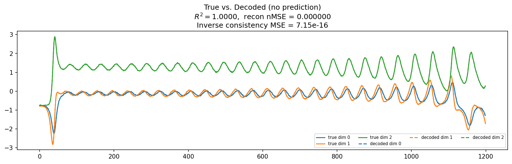
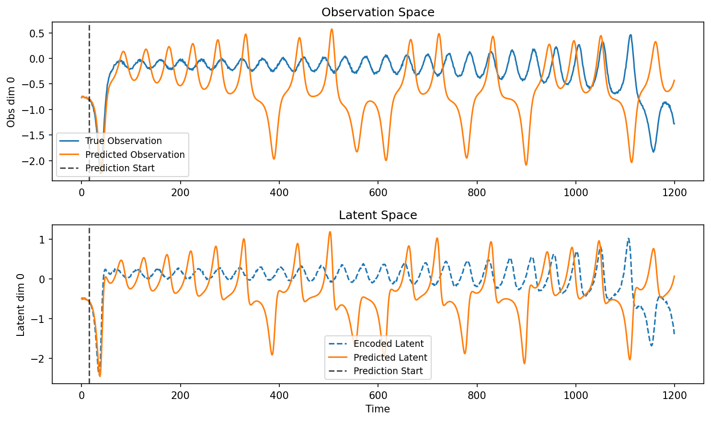
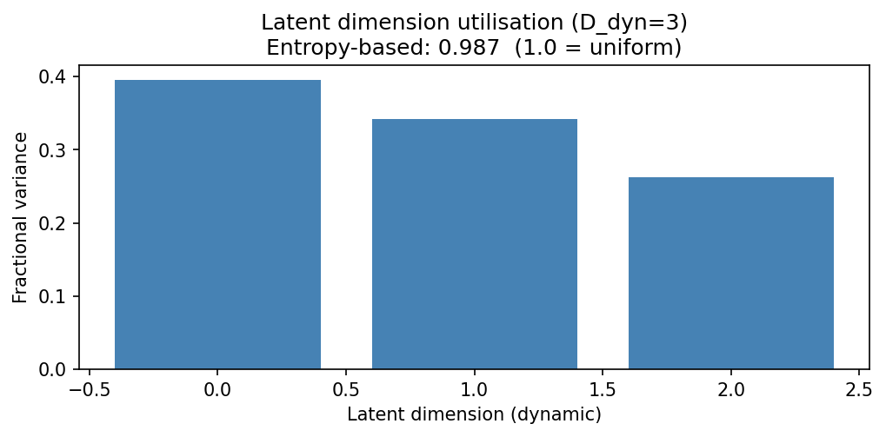
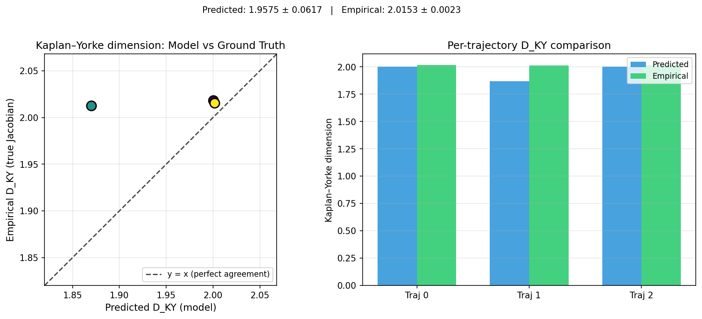
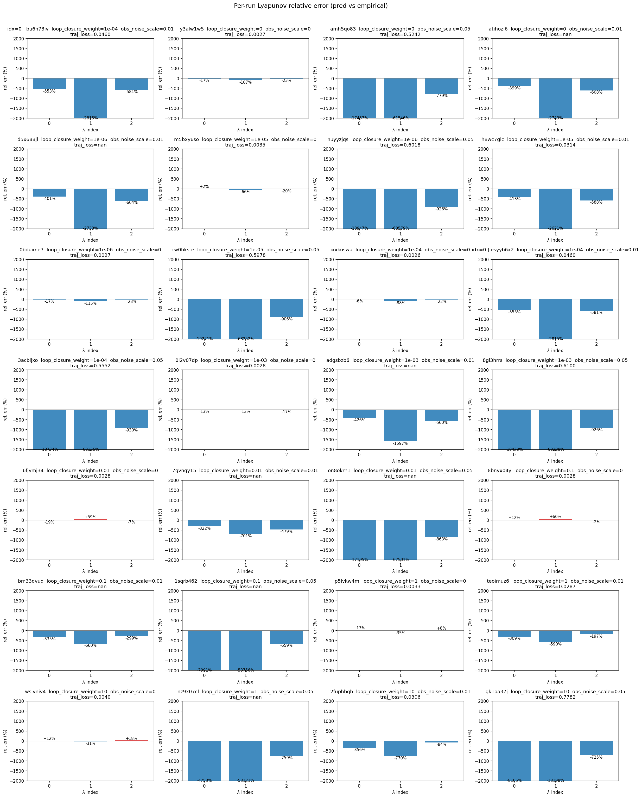
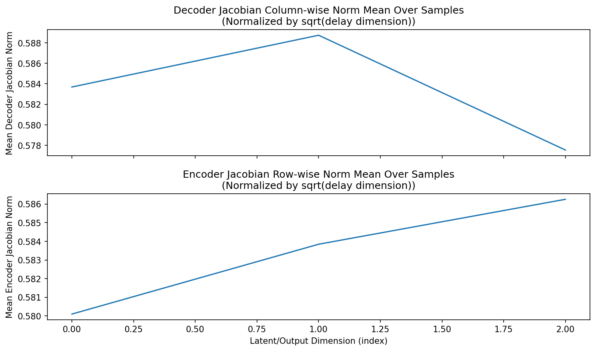
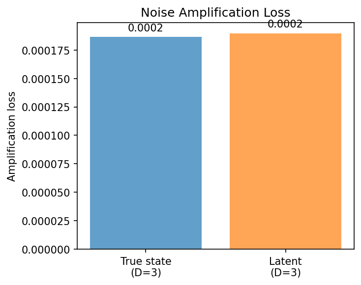
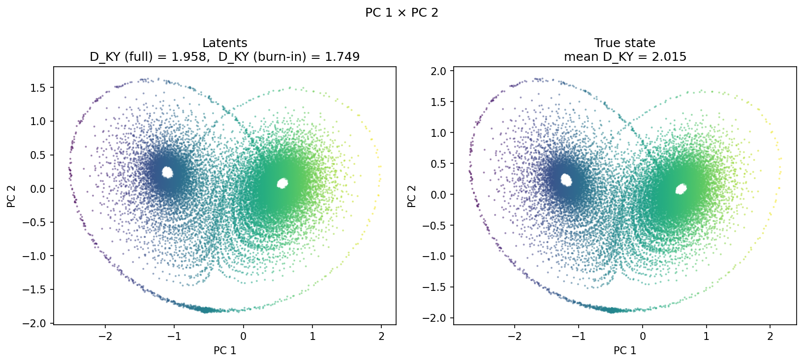
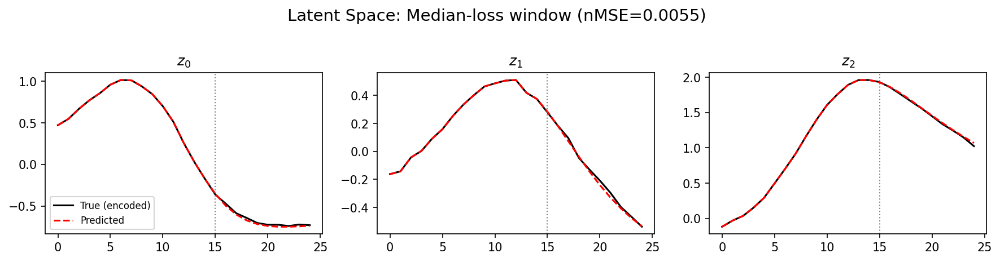
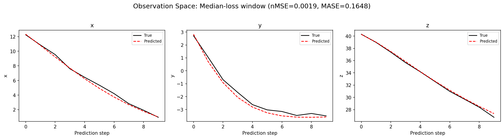

lorenz_additive_joint_gennmse__lc_x_obsnoise_sweepProject: Lorenz_INDall_N1_D1_NormTrue_T3__JacobianODE
Launched: 2026-04-13T00:31:10Z
Completed: 2026-04-13T02:40:11Z
Outcome: complete_clean
Git: latent-JacobianODE @ 0a4d186
Expected runs: 1
lorenz_additive_joint_gennmseDescription
Fully observed Lorenz-63 (all 3 dims, no delay embedding). Additive coupling encoder with zero_init (starts at identity-permutation), trained jointly with the Jacobian dynamics using gennMSE. Sweeps loop_closure_weight × obs_noise_scale (9 × 3 = 27).
Hypothesis
With a well-conditioned additive encoder and gennMSE's stable loss scaling, the latent JacobianODE learns Lorenz's attractor and recovers its Lyapunov spectrum (λ ≈ [0.91, 0, -14.57], λ₁ > 0). Optimal LC should sit in the 1e-5 – 1e-3 range with a broad basin.
Success criteria
Swept axes (3): data.postprocessing.generalized_variance, training.lightning.loop_closure_weight, training.lightning.obs_noise_scale
Chosen run (by best_traj_loss): bu6n73iv — traj_loss=0.01366, MASE=0.9670, R²=0.9982, LC loss=9.217, epoch=44.0
Swept-axis values at chosen run: data.postprocessing.generalized_variance=0.160482 · training.lightning.loop_closure_weight=1.0e-04 · training.lightning.obs_noise_scale=0.01
⚠️ 26 wandb run(s) did not match any run_idx (excluded from the per-run table). These are most likely orphans from preempt-cycle retries or rate-limit re-launches. IDs: y3alw1w5, amh5qo83, atihozi6, d5x688jl, m5bxy6so, nuyyzjqs, h8wc7glc, 0bduime7, cw0hkste, ixxkuswu, 3acbijxo, 0i2v07dp, adgsbzb6, 8gi3hrrs, 6fjymj34, 7gvngy15, on8okrh1, 8bnyx04y, bm33qvuq, 1sqrb462, p5lvkw4m, teoimuz6, wsivniv4, nz9x07cl, 2fuphbqb, gk1oa37j.
⚠️ 1 run_idx slot(s) had multiple matching wandb runs — the best by best_traj_loss was kept; the others are listed below for audit:
- run_idx=0: chose bu6n73iv, dropped esyyb6x2
Runs analyzed: 1 (expected 1)
| run_idx | run_id | data.postprocessing.generalized_variance |
training.lightning.loop_closure_weight |
training.lightning.obs_noise_scale |
best_traj_loss | best_MASE | R² | LC loss | epoch |
|---|---|---|---|---|---|---|---|---|---|
| 0 | bu6n73iv |
0.160482 | 1.0e-04 | 0.01 | 0.01366 | 0.9670 | 0.9982 | 9.217 | 44.0 |
| Criterion | Verdict | Note |
|---|---|---|
| Best run's leading Lyapunov exponent > 0 (chaos recovered) | Unknown | |
| Best run's predicted Lyapunov spectrum within ~20% of empirical | Unknown | |
| val/trajectory_r2_score > 0.95 at the best configuration | Pass | Best R² = 0.9982; threshold > 0.95 |
| Loop closure bounded and monotonically improving at low LC | Unknown |
Automated verdicts use simple numeric-threshold parsing and may mis-classify qualitative criteria. The Discussion section below takes precedence.

















(to be written)
run_analytics stdoutrun_analyticsNo run_id provided — selecting best run from group 'lorenz_additive_joint_gennmse__lc_x_obsnoise_sweep' ...
Found 28 total runs in JacobianODE/Lorenz_INDall_N1_D1_NormTrue_T3__JacobianODE (group=lorenz_additive_joint_gennmse__lc_x_obsnoise_sweep)
All runs (state, loop_closure_weight, tangent_entropy_weight, kl_dyn_weight):
bu6n73iv: state=finished, lc=0.0001, te=0.0, kl_dyn=0.0
y3alw1w5: state=finished, lc=0.0, te=0.0, kl_dyn=0.0
amh5qo83: state=finished, lc=0.0, te=0.0, kl_dyn=0.0
atihozi6: state=finished, lc=0.0, te=0.0, kl_dyn=0.0
d5x688jl: state=finished, lc=1e-06, te=0.0, kl_dyn=0.0
m5bxy6so: state=finished, lc=1e-05, te=0.0, kl_dyn=0.0
nuyyzjqs: state=finished, lc=1e-06, te=0.0, kl_dyn=0.0
h8wc7glc: state=finished, lc=1e-05, te=0.0, kl_dyn=0.0
0bduime7: state=finished, lc=1e-06, te=0.0, kl_dyn=0.0
cw0hkste: state=finished, lc=1e-05, te=0.0, kl_dyn=0.0
ixxkuswu: state=finished, lc=0.0001, te=0.0, kl_dyn=0.0
esyyb6x2: state=finished, lc=0.0001, te=0.0, kl_dyn=0.0
3acbijxo: state=finished, lc=0.0001, te=0.0, kl_dyn=0.0
0i2v07dp: state=finished, lc=0.001, te=0.0, kl_dyn=0.0
adgsbzb6: state=finished, lc=0.001, te=0.0, kl_dyn=0.0
8gi3hrrs: state=finished, lc=0.001, te=0.0, kl_dyn=0.0
6fjymj34: state=finished, lc=0.01, te=0.0, kl_dyn=0.0
7gvngy15: state=finished, lc=0.01, te=0.0, kl_dyn=0.0
on8okrh1: state=finished, lc=0.01, te=0.0, kl_dyn=0.0
8bnyx04y: state=finished, lc=0.1, te=0.0, kl_dyn=0.0
bm33qvuq: state=finished, lc=0.1, te=0.0, kl_dyn=0.0
1sqrb462: state=finished, lc=0.1, te=0.0, kl_dyn=0.0
p5lvkw4m: state=finished, lc=1.0, te=0.0, kl_dyn=0.0
teoimuz6: state=finished, lc=1.0, te=0.0, kl_dyn=0.0
wsivniv4: state=finished, lc=10.0, te=0.0, kl_dyn=0.0
nz9x07cl: state=finished, lc=1.0, te=0.0, kl_dyn=0.0
2fuphbqb: state=finished, lc=10.0, te=0.0, kl_dyn=0.0
gk1oa37j: state=finished, lc=10.0, te=0.0, kl_dyn=0.0
slurm_timeout_min not found in any run config — falling back to 180 min
Including bu6n73iv (lc=0.0001): use_all_runs=True (state=finished)
Including y3alw1w5 (lc=0.0): use_all_runs=True (state=finished)
Including amh5qo83 (lc=0.0): use_all_runs=True (state=finished)
Including atihozi6 (lc=0.0): use_all_runs=True (state=finished)
Including d5x688jl (lc=1e-06): use_all_runs=True (state=finished)
Including m5bxy6so (lc=1e-05): use_all_runs=True (state=finished)
Including nuyyzjqs (lc=1e-06): use_all_runs=True (state=finished)
Including h8wc7glc (lc=1e-05): use_all_runs=True (state=finished)
Including 0bduime7 (lc=1e-06): use_all_runs=True (state=finished)
Including cw0hkste (lc=1e-05): use_all_runs=True (state=finished)
Including ixxkuswu (lc=0.0001): use_all_runs=True (state=finished)
Including esyyb6x2 (lc=0.0001): use_all_runs=True (state=finished)
Including 3acbijxo (lc=0.0001): use_all_runs=True (state=finished)
Including 0i2v07dp (lc=0.001): use_all_runs=True (state=finished)
Including adgsbzb6 (lc=0.001): use_all_runs=True (state=finished)
Including 8gi3hrrs (lc=0.001): use_all_runs=True (state=finished)
Including 6fjymj34 (lc=0.01): use_all_runs=True (state=finished)
Including 7gvngy15 (lc=0.01): use_all_runs=True (state=finished)
Including on8okrh1 (lc=0.01): use_all_runs=True (state=finished)
Including 8bnyx04y (lc=0.1): use_all_runs=True (state=finished)
Including bm33qvuq (lc=0.1): use_all_runs=True (state=finished)
Including 1sqrb462 (lc=0.1): use_all_runs=True (state=finished)
Including p5lvkw4m (lc=1.0): use_all_runs=True (state=finished)
Including teoimuz6 (lc=1.0): use_all_runs=True (state=finished)
Including wsivniv4 (lc=10.0): use_all_runs=True (state=finished)
Including nz9x07cl (lc=1.0): use_all_runs=True (state=finished)
Including 2fuphbqb (lc=10.0): use_all_runs=True (state=finished)
Including gk1oa37j (lc=10.0): use_all_runs=True (state=finished)
Found 28 effectively-done sweep runs:
loop_closure_weight=0.0, tangent_entropy_weight=0.0, kl_dyn_weight=0.0 -> run_id=amh5qo83
loop_closure_weight=0.0, tangent_entropy_weight=0.0, kl_dyn_weight=0.0 -> run_id=atihozi6
loop_closure_weight=0.0, tangent_entropy_weight=0.0, kl_dyn_weight=0.0 -> run_id=y3alw1w5
loop_closure_weight=1e-06, tangent_entropy_weight=0.0, kl_dyn_weight=0.0 -> run_id=0bduime7
loop_closure_weight=1e-06, tangent_entropy_weight=0.0, kl_dyn_weight=0.0 -> run_id=d5x688jl
loop_closure_weight=1e-06, tangent_entropy_weight=0.0, kl_dyn_weight=0.0 -> run_id=nuyyzjqs
loop_closure_weight=1e-05, tangent_entropy_weight=0.0, kl_dyn_weight=0.0 -> run_id=cw0hkste
loop_closure_weight=1e-05, tangent_entropy_weight=0.0, kl_dyn_weight=0.0 -> run_id=h8wc7glc
loop_closure_weight=1e-05, tangent_entropy_weight=0.0, kl_dyn_weight=0.0 -> run_id=m5bxy6so
loop_closure_weight=0.0001, tangent_entropy_weight=0.0, kl_dyn_weight=0.0 -> run_id=3acbijxo
loop_closure_weight=0.0001, tangent_entropy_weight=0.0, kl_dyn_weight=0.0 -> run_id=bu6n73iv
loop_closure_weight=0.0001, tangent_entropy_weight=0.0, kl_dyn_weight=0.0 -> run_id=esyyb6x2
loop_closure_weight=0.0001, tangent_entropy_weight=0.0, kl_dyn_weight=0.0 -> run_id=ixxkuswu
loop_closure_weight=0.001, tangent_entropy_weight=0.0, kl_dyn_weight=0.0 -> run_id=0i2v07dp
loop_closure_weight=0.001, tangent_entropy_weight=0.0, kl_dyn_weight=0.0 -> run_id=8gi3hrrs
loop_closure_weight=0.001, tangent_entropy_weight=0.0, kl_dyn_weight=0.0 -> run_id=adgsbzb6
loop_closure_weight=0.01, tangent_entropy_weight=0.0, kl_dyn_weight=0.0 -> run_id=6fjymj34
loop_closure_weight=0.01, tangent_entropy_weight=0.0, kl_dyn_weight=0.0 -> run_id=7gvngy15
loop_closure_weight=0.01, tangent_entropy_weight=0.0, kl_dyn_weight=0.0 -> run_id=on8okrh1
loop_closure_weight=0.1, tangent_entropy_weight=0.0, kl_dyn_weight=0.0 -> run_id=1sqrb462
loop_closure_weight=0.1, tangent_entropy_weight=0.0, kl_dyn_weight=0.0 -> run_id=8bnyx04y
loop_closure_weight=0.1, tangent_entropy_weight=0.0, kl_dyn_weight=0.0 -> run_id=bm33qvuq
loop_closure_weight=1.0, tangent_entropy_weight=0.0, kl_dyn_weight=0.0 -> run_id=nz9x07cl
loop_closure_weight=1.0, tangent_entropy_weight=0.0, kl_dyn_weight=0.0 -> run_id=p5lvkw4m
loop_closure_weight=1.0, tangent_entropy_weight=0.0, kl_dyn_weight=0.0 -> run_id=teoimuz6
loop_closure_weight=10.0, tangent_entropy_weight=0.0, kl_dyn_weight=0.0 -> run_id=2fuphbqb
loop_closure_weight=10.0, tangent_entropy_weight=0.0, kl_dyn_weight=0.0 -> run_id=gk1oa37j
loop_closure_weight=10.0, tangent_entropy_weight=0.0, kl_dyn_weight=0.0 -> run_id=wsivniv4
n_dims=3, n_latent=3, n_dyn=3, dt=0.0150
run=amh5qo83: DiagnosticMetrics(one_step_mase=3.39251971244812, loop_closure_loss=6.16535758972168, fast_eigenvalue_fraction=0.7866666913032532, trajectory_val_loss=0.4559133052825928) (from cache, n_batches=100)
run=atihozi6: DiagnosticMetrics(one_step_mase=0.4412441551685333, loop_closure_loss=56.537174224853516, fast_eigenvalue_fraction=0.2958333194255829, trajectory_val_loss=0.013448437675833702) (from cache, n_batches=100)
run=y3alw1w5: DiagnosticMetrics(one_step_mase=0.38569697737693787, loop_closure_loss=0.4127780795097351, fast_eigenvalue_fraction=0.0, trajectory_val_loss=0.0026140741538256407) (from cache, n_batches=100)
run=0bduime7: DiagnosticMetrics(one_step_mase=0.38570183515548706, loop_closure_loss=0.39761778712272644, fast_eigenvalue_fraction=0.0, trajectory_val_loss=0.0026140923146158457) (from cache, n_batches=100)
run=d5x688jl: DiagnosticMetrics(one_step_mase=0.4410351812839508, loop_closure_loss=47.71196746826172, fast_eigenvalue_fraction=0.2916666567325592, trajectory_val_loss=0.013446961529552937) (from cache, n_batches=100)
run=nuyyzjqs: DiagnosticMetrics(one_step_mase=4.397590637207031, loop_closure_loss=8.279156684875488, fast_eigenvalue_fraction=0.7641666531562805, trajectory_val_loss=0.43987905979156494) (from cache, n_batches=100)
run=cw0hkste: DiagnosticMetrics(one_step_mase=4.3480634689331055, loop_closure_loss=6.211432456970215, fast_eigenvalue_fraction=0.7641666531562805, trajectory_val_loss=0.4543336033821106) (from cache, n_batches=100)
run=h8wc7glc: DiagnosticMetrics(one_step_mase=0.44025465846061707, loop_closure_loss=25.491748809814453, fast_eigenvalue_fraction=0.26499998569488525, trajectory_val_loss=0.01353801041841507) (from cache, n_batches=100)
run=m5bxy6so: DiagnosticMetrics(one_step_mase=0.38644102215766907, loop_closure_loss=0.36026421189308167, fast_eigenvalue_fraction=0.0, trajectory_val_loss=0.0027024121955037117) (from cache, n_batches=100)
run=3acbijxo: DiagnosticMetrics(one_step_mase=4.2028350830078125, loop_closure_loss=5.554229259490967, fast_eigenvalue_fraction=0.7608333230018616, trajectory_val_loss=0.429546594619751) (from cache, n_batches=100)
run=bu6n73iv: DiagnosticMetrics(one_step_mase=0.4426366984844208, loop_closure_loss=9.216533660888672, fast_eigenvalue_fraction=0.27916666865348816, trajectory_val_loss=0.0136601272970438) (from cache, n_batches=100)
run=esyyb6x2: DiagnosticMetrics(one_step_mase=0.4426366984844208, loop_closure_loss=9.216533660888672, fast_eigenvalue_fraction=0.27916666865348816, trajectory_val_loss=0.0136601272970438) (from cache, n_batches=100)
run=ixxkuswu: DiagnosticMetrics(one_step_mase=0.3857693374156952, loop_closure_loss=0.06590361893177032, fast_eigenvalue_fraction=0.0, trajectory_val_loss=0.0026056210044771433) (from cache, n_batches=100)
run=0i2v07dp: DiagnosticMetrics(one_step_mase=0.38626959919929504, loop_closure_loss=0.009351909160614014, fast_eigenvalue_fraction=0.0, trajectory_val_loss=0.0026351045817136765) (from cache, n_batches=100)
run=8gi3hrrs: DiagnosticMetrics(one_step_mase=4.207376956939697, loop_closure_loss=2.7706615924835205, fast_eigenvalue_fraction=0.7608333230018616, trajectory_val_loss=0.4426262676715851) (from cache, n_batches=100)
run=adgsbzb6: DiagnosticMetrics(one_step_mase=0.43370550870895386, loop_closure_loss=2.431546688079834, fast_eigenvalue_fraction=0.23000000417232513, trajectory_val_loss=0.012851215898990631) (from cache, n_batches=100)
run=6fjymj34: DiagnosticMetrics(one_step_mase=0.387043833732605, loop_closure_loss=0.002027137205004692, fast_eigenvalue_fraction=0.0, trajectory_val_loss=0.0026756832376122475) (from cache, n_batches=100)
run=7gvngy15: DiagnosticMetrics(one_step_mase=0.4344756305217743, loop_closure_loss=0.16881613433361053, fast_eigenvalue_fraction=0.1641666740179062, trajectory_val_loss=0.010721173137426376) (from cache, n_batches=100)
run=on8okrh1: DiagnosticMetrics(one_step_mase=3.7337424755096436, loop_closure_loss=1.7053712606430054, fast_eigenvalue_fraction=0.7741666436195374, trajectory_val_loss=0.42866629362106323) (from cache, n_batches=100)
run=1sqrb462: DiagnosticMetrics(one_step_mase=3.4915738105773926, loop_closure_loss=0.07420574873685837, fast_eigenvalue_fraction=0.6658333539962769, trajectory_val_loss=0.7644325494766235) (from cache, n_batches=100)
run=8bnyx04y: DiagnosticMetrics(one_step_mase=0.38784924149513245, loop_closure_loss=0.00034362179576419294, fast_eigenvalue_fraction=0.0, trajectory_val_loss=0.0027487429324537516) (from cache, n_batches=100)
run=bm33qvuq: DiagnosticMetrics(one_step_mase=0.4265720248222351, loop_closure_loss=0.013177753426134586, fast_eigenvalue_fraction=0.02083333395421505, trajectory_val_loss=0.009974733926355839) (from cache, n_batches=100)
run=nz9x07cl: DiagnosticMetrics(one_step_mase=2.792811632156372, loop_closure_loss=0.04217519611120224, fast_eigenvalue_fraction=0.637499988079071, trajectory_val_loss=0.5344958305358887) (from cache, n_batches=100)
run=p5lvkw4m: DiagnosticMetrics(one_step_mase=0.39128631353378296, loop_closure_loss=0.00010528202255954966, fast_eigenvalue_fraction=0.0, trajectory_val_loss=0.00326258665882051) (from cache, n_batches=100)
run=teoimuz6: DiagnosticMetrics(one_step_mase=0.4473031759262085, loop_closure_loss=0.002567511284723878, fast_eigenvalue_fraction=0.0, trajectory_val_loss=0.012233463115990162) (from cache, n_batches=100)
run=2fuphbqb: DiagnosticMetrics(one_step_mase=0.45718708634376526, loop_closure_loss=0.0050450884737074375, fast_eigenvalue_fraction=0.0, trajectory_val_loss=0.019569581374526024) (from cache, n_batches=100)
run=gk1oa37j: DiagnosticMetrics(one_step_mase=3.2940752506256104, loop_closure_loss=0.004536627791821957, fast_eigenvalue_fraction=0.3333333432674408, trajectory_val_loss=0.7519117593765259) (from cache, n_batches=100)
run=wsivniv4: DiagnosticMetrics(one_step_mase=0.39455413818359375, loop_closure_loss=6.692414171993732e-05, fast_eigenvalue_fraction=0.0, trajectory_val_loss=0.004028536844998598) (from cache, n_batches=100)
Ranking method: best_traj_loss
Best run ID: ixxkuswu
Best loop_closure_weight: 0.0001
Best tangent_entropy_weight: 0.0
Best kl_dyn_weight: 0.0
Best traj loss: 0.002606
Criteria applied: ['C1', 'C2', 'C3']
Surviving: 11 / 28
Auto-selected run_id: ixxkuswu
======================================================================
PARETO FRONTIER RUNS (6 runs)
======================================================================
Run ID LC Loss Traj Val Loss
------------ -------------- --------------
wsivniv4 0.000067 0.004029
p5lvkw4m 0.000105 0.003263
8bnyx04y 0.000344 0.002749
6fjymj34 0.002027 0.002676
0i2v07dp 0.009352 0.002635
ixxkuswu 0.065904 0.002606 <-- selected
======================================================================
RANKING METHOD COMPARISON (over 11 survivors)
======================================================================
Method Run ID LC Loss Traj Val Loss
---------------------- ------------ -------------- --------------
best_traj_loss ixxkuswu 0.065904 0.002606 <-- active
pareto_knee 8bnyx04y 0.000344 0.002749
geo_rank ixxkuswu 0.065904 0.002606
minimax_rank 6fjymj34 0.002027 0.002676
geo_log_score ixxkuswu 0.065904 0.002606
minimax_log_score p5lvkw4m 0.000105 0.003263
======================================================================
Loading run ixxkuswu from JacobianODE/Lorenz_INDall_N1_D1_NormTrue_T3__JacobianODE ...
Train dataset shape: torch.Size([25850, 25, 3])
Validation dataset shape: torch.Size([8225, 25, 3])
Test dataset shape: torch.Size([3525, 25, 3])
Train trajectories dataset shape: torch.Size([22, 1200, 3])
Validation trajectories dataset shape: torch.Size([7, 1200, 3])
Test trajectories dataset shape: torch.Size([3, 1200, 3])
Loading checkpoint epoch=121-step=24400.ckpt...
Computing reconstruction ...
Computing MASE ...
Teacher-forced MASE: 0.3827
Free-running MASE: 0.4593
Computing latent utilization ...
Entropy-based utilization: 0.987
Computing Lyapunov exponents ...
Computing full-trajectory Lyapunov (3 test trajs, T=1200) ...
Predicted Lyapunov exponents (batch+burn-in, 128 windowed trajs):
λ_1 = +0.4227 ± 0.4353
λ_2 = -0.2895 ± 0.2278
λ_3 = -17.2921 ± 0.3432
Predicted Lyapunov exponents (full-length, 3 test trajs):
λ_1 = +0.3793 ± 0.0348
λ_2 = -0.3854 ± 0.0633
λ_3 = -17.2357 ± 0.0358
Empirical Lyapunov exponents (mean ± std):
λ_1 = +0.3846 ± 0.0251
λ_2 = -0.1716 ± 0.0444
λ_3 = -13.8799 ± 0.0398
Mean KY dim (predicted): 1.958 ± 0.062
Mean KY dim (empirical): 2.015 ± 0.002
Mean KY dim (burn-in): 1.749 ± 0.517
Computing prediction windows ...
Windows: 354 — nMSE min=0.0005, median=0.0019, mean=0.0025, max=0.0205
Computing long trajectory prediction ...
Computing encoder/decoder Jacobians ...
encoder_jacobian: (128, 3, 3)
decoder_jacobian: (128, 3, 3)
Computing amplification loss ...
Amplification loss — True state: 0.000186
Amplification loss — Latent: 0.000190